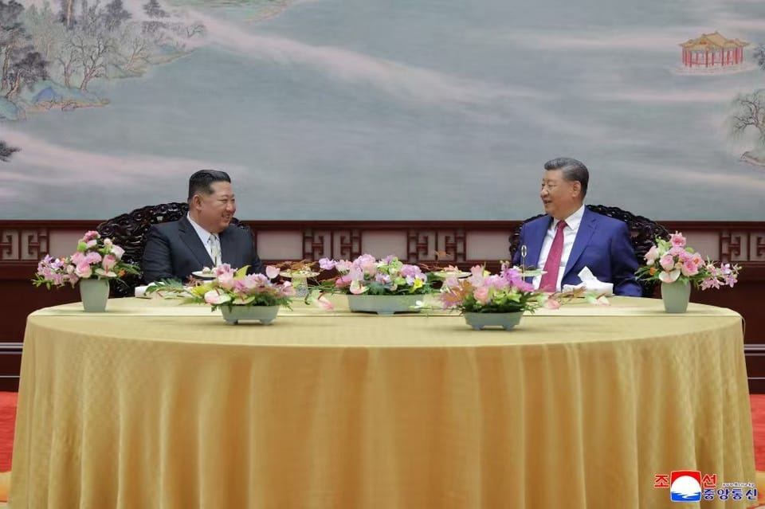

世界苦茶09月06日新闻 | 35条 | 特朗普稱美國已經把印度和俄羅斯輸給中國

特朗普稱美國已經把印度和俄羅斯輸給中國 | 泰自豪黨黨首成為泰國首相 | 巴西用南方國家貿易彌補美國貿易損失 | 前證監會主席被查
苦茶数据
美元兑人民币：7.12（昨日7.13，前日7.14）
美元兑日元：147.07（昨日148.20，前日148.19）
上证指数：休市（昨日3812，前日3781）
标普500指数：休市（昨日6481，前日6502）
比特币：110871（昨日111692，前日110645）
布伦特原油：64.50（昨日66.85，前日67.13）
中国新闻
• 中方驳特朗普施压中国 ：美国总统特朗普星期四要求欧洲领导人对华施加经济压力，并指中国为俄罗斯在乌克兰的军事行动提供资金。中国外交部星期五表示，北京不是乌克兰危机的制造者，坚决反对对华施加经济压力。中国外交部发言人郭嘉昆星期五在例行记者会应询时表示，北京在乌克兰危机问题上一贯秉持公正客观的立场，中国不是这场危机的制造者，也不是当事方。郭嘉昆表示，北京坚决反对动辄拿中国说事儿，坚决反对对华施加经济压力。
• 九三阅兵部队分批回撤 ：参加九三阅兵的中国军方任务部队星期四开始以铁路输送、摩托化机动、空中转场等方式，从阅兵集训点分批回撤，预计9月中旬完成回归到原来单位的任务。据新华社报道，预备役部队方队、民兵方队星期四根据计划安排组织回撤，其他部分方队组织轻武器、车辆装备等撤离转场。地面部队、空中梯队主体力量星期六起组织回撤，预计9月中旬完成回撤归建任务。
• 中俄互免签证将对等 ：中国宣布将对俄罗斯试行免签政策，俄罗斯总统普京说，俄方将对等回应这一友好举措。据俄罗斯总统网页星期四消息，普京同日在符拉迪沃斯托克举行的东方经济论坛上，会见中共中央政治局委员、全国人大常委会副委员长李鸿忠。普京在与李鸿忠的谈话中提到，中国单方面对俄罗斯公民试行免签政策具有重大意义，将关系到数十万甚至数百万俄罗斯人，毫无疑问会使俄罗斯民众赴华旅行增多，并将促进商业发展、商贸往来和人员交往。
• 中方同意加入纽约宣言 ：中国外交部表示，中方已同意加入落实“两国方案”高级别会议的成果文件《纽约宣言》，并指这符合中方在巴勒斯坦问题上的一贯立场。中国外交部发言人郭嘉昆星期五在例行记者会上表示，巴勒斯坦问题是中东问题的核心，落实“两国方案”是解决巴勒斯坦问题的唯一现实出路。“中方同意加入《纽约宣言》，这符合我们在巴勒斯坦问题上的一贯立场”。郭嘉昆说：“当前，巴勒斯坦问题正处于关键时期，我们支持任何有助于推动巴勒斯坦问题政治解决的努力，将继续同国际社会一道，为平息加沙战火、缓解人道危机、落实“两国方案”，最终实现巴勒斯坦问题全面、公正、持久解决作出不懈努力”。
• 前证监会主席易会满被查 ：消息人士透露，中国证监会前主席易会满上周被有关部门带走调查。路透社星期五引述消息人士报道易会满被查的消息，指这名正部级官员涉嫌腐败，调查内容包括在他担任证监会主席期间，亲属是否获取不当利益。消息人士未提供更多细节。易会满去年2月意外被免去中国证监会主席职务，时值中国股市暴跌，基准指数跌至五年最低点，机构和散户投资者纷纷止损。官方当时并未说明易会满被免职的任何理由。
• 习近平提AI应惠及全人类 ：中国国家主席习近平表示，人工智能应是造福全人类的国际公共产品，中国愿同世界各国广泛开展人工智能领域国际合作，加强发展战略、治理规则、技术标准等方面的对接协调。世界智能产业博览会星期五在重庆开幕，由重庆和天津两地政府共同主办，主题为“人工智能+”和“智能网联新能源汽车”。习近平向智博会致贺信，指当前人工智能技术加速迭代演进，正在深刻改变人类生产生活方式、重塑全球产业格局。 （翻评：惠你妈，AI在中国最大用例就是审核，惠及谁啊？）
• 财政下拨近十亿救灾 ：中国财政部会同农业农村部、水利部下达农业防灾减灾和水利救灾资金9.4亿元人民币，支持北京、甘肃等地积极应对洪涝灾害。中国财政部网站星期五发布消息，表示资金一是支持福建、广东、新疆、甘肃等四省受灾地区开展汛后农作物改种补种、农业生产设施水毁修复相关工作，保障粮食生产平稳有序。二是支持北京、河北、内蒙古、吉林、福建、山东、四川、甘肃等八省加快推进水毁水利工程设施修复，助力保障水利工程安全运行。
• 王毅会晤巴方高官促协作 ：美国以高额关税施压巴西之际，中共中央外事工作委员会办公室主任、中国外长王毅星期四在北京会见巴西总统首席特别顾问阿莫林，呼吁两国加强战略协调，增进战略互信，深化战略合作，旗帜鲜明弘扬多边主义，维护国际规则，维护全球南方共同利益，为完善全球治理作出积极努力。据中国外交部官网发布的消息，王毅与阿莫林在星期四的会见中，就乌克兰危机、中东局势、气候变化等问题交换了意见。王毅会见中欢迎阿莫林代表巴西政府，出席纪念中国人民抗日战争暨世界反法西斯战争胜利80周年活动，并指中巴关系在两国元首战略引领下不断迈上新台阶。
亚太印太新闻
• 台盼意舰经台海 ：台湾外交部长林佳龙会见访台的意大利跨党派国会议员团时表示，他期盼意大利能派舰航经台海，捍卫航行自由，共同捍卫民主。台湾外交部星期五发布新闻稿称，意大利国会友台协会共同主席帕洛里于星期四率友台协会成员赴台访问。林佳龙接见时表示，诚挚欢迎近年来规模最大的意大利跨党派国会议员团到访，并感谢意大利国会推动支持台湾国际参与。
• 曝美海豹朝鲜行动失败 ：据《纽约时报》星期五报道，美国海豹突击队2019年在朝鲜实施了一次部署窃听器的秘密行动，但行踪败露，杀害了多名朝鲜平民，秘密行动以失败告终。《纽约时报》引述包括现任和前任军方官员在内的匿名消息人士的话报道，时任美国总统特朗普批准了这项行动，他当时正与朝鲜领导人金正恩在越南河内举行会谈。白宫、五角大楼和美国驻首尔大使馆尚未就《纽约时报》报道回应路透社的询问。
• 阿努廷当选泰国新相 ：泰国下议院星期五召开特别会议后选举新首相，泰自豪党党魁阿努廷在投票中获胜，他将接替被解除首相职务的佩通坦。路透社报道，阿努廷获得了下议院过半数议员的支持，战胜为泰党提名的首相候选人、前司法部长猜甲森。为泰党在落败后说，该党将重返执政，落实其议程。
• 达信称遭延误改飞迪拜 ：泰国前首相达信在社媒平台说，由于曼谷海关延误，他被迫放弃飞往新加坡，转飞往迪拜。《曼谷邮报》报道，达信于星期五凌晨2时07分在X贴文说，他原本要到新加坡接受身体检查，并称新加坡的一位医生曾为他治疗过。达信在X写道，尽管他的一起案件已经审结，他有权离开泰国，但他的飞机却被泰国海关警察拖延将近两个小时才起飞。
• 赵少康称考虑参选国民党魁 ：前中广董事长赵少康说，如果卢秀燕、朱立伦、郝龙斌都不参选国民党主席，他会考虑参选，并称韩国瑜希望他出来。据联合新闻网报道，台中市长卢秀燕、现任主席朱立伦均已表示不争取、不连任，外传可能参选的前台北市长郝龙斌也未明确表态。朱立伦星期四颁发中评会主席团主席聘书给赵少康，形同让赵拥有参选资格。赵少康星期五说，四年前他曾想选党主席，但当时因为没有中评委身份，没有恢复党籍超过一年。
• 柯文哲高额交保受限 ：涉京华城弊案的台湾在野民众党前主席柯文哲关押满一年，星期五得以交保回家。据台湾TVBS新闻网，台北地院星期五裁定，柯文哲以7000万元新台币、台北市议员应晓薇以3000万元保证金获保释，两人都限制出境、出海，限制住居、不得与共同被告、未传唤证人接触，同时受到科技监控。台北地院指出，本案密集开庭交互诘问证人，就与柯文哲涉犯贪污的待证事实密切相关的重要证人彭振声等人，已于9月2日诘问完毕；与应晓薇涉案密切相关的重要证人陈佳敏、王尊侃等人，也在8月26日诘问完毕，相关事证已获相当程度的保全，两人就本案重罪部分灭证、串供可行性与可能性已大幅降低。
• 金正恩结束破纪录访华 ：朝鲜最高领导人金正恩星期四晚上结束访华行程，从北京启程回朝。金正恩此行在华停留五天四夜，在华停留时长创纪录。他在北京停留约54小时，同样创纪录。据韩国官媒韩联社报道，金正恩此前曾四次对中国进行访问。第一次和第四次访华行程均为四天三夜；第二次和第三次为两天一夜。金正恩第一次和第四次访华时乘坐深绿专列，在京停留时间分别为25个和27个小时。
• 9月4日晚10时许，金正恩结束在华活动行程自北京站出发回国： 此前，他与习近平会谈 并接受习近平宴请。在京期间，金正恩同普京会见会谈。此外，《劳动新闻》9月3日头版报道2日金正恩父女抵京消息并配图，2版刊社论《我们国家的固有特征》，谈及“继承问题”。对比中、朝双方就金-习会谈发出的新闻稿，发现朝方基本沿用中方稿件，系金正恩历次访华报道中首次。双方均不再使用“无核化”相关提法。至发稿时，同行抵京的金正恩女儿未见有在京活动报道。
• 韩美日再启自由之刃 ：韩美日9月15日至19日在济州东南方向公海实施代号为“自由之刃”的联合多域演习。韩联社报道，韩国联合参谋本部星期五说，此次联演是旨在应对朝鲜核导威胁、维护地区和平与稳定的例行演习，将严格遵守国际法和相关规定。三国将通过联演加强在空域、海域、网域等多个领域的作战能力并提升互操作性，从而维持稳固的三边合作关系。这是“自由之刃”多域联演时隔10个月再次实施，也是自美国总统特朗普开启第二任期和韩国总统李在明就任以来的首场演习，反映出三方维持三边安全合作的决心。
科技新闻
• 字节芯片团队转隶新加坡 ：TikTok母公司中国互联网公司字节跳动的晶片设计人员上周意外发现，他们已隶属于集团的一家新加坡子公司。路透社星期五报道三名知情人士透露了这个消息。这些晶片设计人员当中，许多人是在北京或上海工作。两名知情人士说，这些员工是在被调到公司内部通讯平台的一个新群组时发现这一情况。
• 科技巨头承诺加码美AI ：美国总统特朗普星期四在白宫为美国科技巨头设晚宴，脸书母公司Meta Platforms首席执行官扎克伯格和苹果公司总裁库克等一致向特朗普承诺，将大幅增加在美国人工智能领域的投资。彭博社报道，这次白宫晚宴凸显特朗普与硅谷的关系日益加深。特朗普在白宫宴会厅致开场词时提到科技公司的一个主要关切，即确保有足够的能源，以满足AI荣景背后的数据中心不断增长的电力需求。
财经新闻
• 巴西通過南方市場抵消對美出口的減少： 自8月6日起，美國對約半數從巴西進口的商品加徵50%的關稅，此舉直接導致該月巴西對美出口額大幅下滑18%，從去年同期的33.9億美元降至27.6億美元。美國作為巴西的第二大貿易夥伴，其市場需求的減少無疑對巴西出口構成了嚴峻挑戰。然而，巴西的整體外貿表現並未因此受挫。數據顯示，8月份巴西的總出口額相較於2024年同期增長了3.9%，達到299億美元。與此同時，總進口額則下降了2%，為237億美元。這一進一退之間，使得巴西的貿易順差從去年同期的45億美元飆升至61億美元，增幅高達35.8%。這一強勁增長的背後，主要得益於巴西對其他主要貿易夥伴出口的顯著提升。其中，對中國的出口表現尤為亮眼。中國作為巴西最大的貿易夥伴，佔其總出口額的三分之一，8月份對華出口額激增29.9%，達到96億美元。此外，對南方共同市場的出口也增長了27.9%，達到22億美元。這些增長成功抵銷了對美出口的下滑以及對歐盟出口減少11.9%所帶來的負面影響。
• 中对欧猪肉征保证金 ：中国商务部星期五公告，认定欧盟进口猪肉及猪副产品存在倾销，将需要交保证金。公告称，调查机关初步认定，原产于欧盟的进口相关猪肉及猪副产品存在倾销，国内产业受到实质损害，而且倾销与实质损害之间存在因果关系。根据《反倾销条例》规定，调查机关决定采用保证金形式实施临时反倾销措施。自2025年9月10日起，进口经营者在进口被调查产品时，应依据本初裁决定所确定的各公司的保证金比率，向中国海关提供相应的保证金。
• 苹果在印营收创纪录 ：苹果公司在印度的年销售额创下近90亿美元的纪录，表明随着该公司在这个全球人口最多的国家扩大零售业务，消费者对其旗舰产品的需求持续增长。据业内人士透露，在截至今年三月的12个月里，苹果在印收入较上年同期的80亿美元增长了约13%。其中，苹果的iPhone占据了销量的大部分，印度市场对MacBook电脑的需求也在快速增长。这一数据的飞跃，对一直苦于移动设备销量增长停滞的苹果公司来说显然是一针强心剂 —— 虽然印度市场目前只占其整体业务的一小部分，但苹果公司正在印度进行投资，预计未来几年印度将成为一个关键市场。
• 星巴克中国股权竞购升温 ：此前星巴克证实将出售中国业务，且有20家机构感兴趣。路透社引述两位接近交易谈判情况的知情人士称，大多数寻求收购星巴克中国部分业务的竞购者都已提交报价，对星巴克中国业务的估值高达50亿美元。7月底，星巴克董事长兼首席执行官倪睿安亲口证实将出售中国业务的部分股权，有超20家机构表达合作意向。路透社星期五引述知情人士称，大多数报价将星巴克中国的估值定在2025年预期息税折摊前盈利的10倍左右。星巴克中国的2025年预期EBITDA在4亿至5亿美元。
• 特朗普威胁启用301反制 ：美国总统特朗普在其真实社交平台发文，批评欧盟对谷歌处以35亿美元罚款，称这一举动 “极其不公平”，是在掠夺本应用于美国投资与就业的资金。他指出，这只是近年来欧洲针对谷歌及其他美国科技企业开出的众多罚款和税收之一。特朗普强调，其政府不会容忍这种 “歧视性行为”。特朗普警告，如果欧洲继续对美国科技巨头采取类似措施，他将被迫启动 “301条款” 程序，推翻这些“不公平的处罚”，以保护美国纳税企业的利益。欧盟委员会当地时间9月5日宣布，对谷歌处以29.5亿欧元罚款，原因是该公司在广告技术市场中滥用主导地位，损害竞争环境。
俄乌战争
• 美或主导乌俄缓冲区监控 ：据美国全国广播公司星期五报道，如果达成和平协议，美国可能会在监控乌克兰和俄罗斯之间的缓冲区方面发挥主导作用。路透社报道，NBC引述四名知情人士的话说，缓冲区旨在保护乌克兰免受俄罗斯的进一步攻击。缓冲区将是一个大型非军事区，并可能由沙特阿拉伯或孟加拉国等一个或多个非北约国家的军队驻守。
• 美拟停欧俄邻国军援 ：立陶宛国防部官员星期五说，美国国防部上周通知欧洲国家，根据一项名为“333条款”的计划，从下一个财年起，美国提供的军事援助将全部削减至零。路透社报道，两名知情人士星期四说，美国将逐步取消对俄罗斯边境附近欧洲国家的部分安全援助，这引发立陶宛、爱沙尼亚和拉脱维亚等主要受援国的担忧。立陶宛国防部政策主管乌尔贝利斯星期五在维尔纽斯告诉记者，立陶宛正在与美国政府就哪些军事援助将继续提供，以及哪些援助将暂停进行谈判。
• 克宫称特朗普务实可取 ：克里姆林宫发言人佩斯科夫在星期五发表的一次采访中说，美国总统特朗普在外交上达成交易的做法“相当愤世嫉俗”，但从积极的方面来说，这种做法是值得肯定的。路透社报道，在接受俄罗斯新闻媒体《论证与事实》采访时，佩斯科夫将特朗普的立场与欧洲国家的立场进行对比。他说，欧洲国家正竭尽全力阻碍和平解决乌克兰战争。“相比之下，特朗普更具建设性。他相当愤世嫉俗。他会说‘如果可以交易，何必打仗’。基于美国的利益，他会竭尽全力阻止战争。”
• 普京称愿与阿拉斯加合作 ：俄罗斯总统普京说，俄罗斯对与美国在阿拉斯加州开展合作持开放态度，但两国恢复经济往来，需要华盛顿做出一个政治决定。路透社报道，普京星期五在俄罗斯远东城市符拉迪沃斯托克举行的一场经济论坛上说，美国的阿拉斯加州拥有巨大的资源潜力，而俄罗斯拥有油气开发技术，他说，俄罗斯愿意与美国进行合作。另一方面，普京警告，任何部署到乌克兰的西方军队都将是莫斯科的合法打击目标。
• 泽连斯基与特朗普通话 ：乌克兰总统泽连斯基星期四在法国巴黎参加“志愿联盟”线上会议后，与美国总统特朗普通电话，重点讨论对俄罗斯追加强力制裁和保护乌领空方案等事宜，一些欧洲领导人加入通话。新华社报道，泽连斯基在社交媒体发文说，他与特朗普首先讨论如何推动俄乌局势迈向“真正的和平”，涉及不同选项，“最重要的是对俄施压，利用强有力的措施尤其是经济措施来迫使战争结束”。泽连斯基和特朗普还讨论如何最大限度保护乌领空。泽连斯基说，必须防止俄军导弹和无人机造成乌克兰人死亡。就此，乌克兰提出一项保护乌领空的方案并请美方予以考虑。
国际新闻
• 以军称控加沙城四成 ：以色列国防军说，以军目前已控制加沙地带北部加沙城40%的区域，将在接下来几天扩大并强化军事行动。与此同时，以军的轰炸迫使更多巴勒斯坦人逃离家园，但仍有数千居民无视以色列的撤离命令，留在废墟中，处于以色列最新攻势的前方。路透社报道，以色列国防军发言人戴弗林在星期四的新闻发布会说，以军本周动员数万名预备役军人，以推进对加沙城内哈马斯的打击。目前，以军多个旅正在加沙城北部谢赫·拉德万社区、东南部宰通区等地展开行动，打击哈马斯并且摧毁其地道等基础设施，直至其“彻底溃败”。加沙卫生当局指以军当天向整个飞地发动炮击，造成至少53人死亡，其中大部分发生在加沙城，以军已穿过外围郊区，目前距离市中心仅几公里。
• 以外长警告法方承认巴国 ：以色列外交部长萨尔要求法国重新考虑承认巴勒斯坦国的决定，并表明，如果法国坚持损害以方利益，法国总统马克龙就“没可能”访问以色列。新华社报道，萨尔星期四与法国外长巴罗通电话，称法方计划承认巴勒斯坦国的举动损害以方国家利益和安全利益，以方致力于与法方发展良好关系，但在事关以色列安全和未来的核心问题上，法方必须尊重以方立场。据以色列公共广播公司早前报道，以总理内坦亚胡拒绝马克龙在法国宣布承认巴勒斯坦国之前访问以色列。内坦亚胡说，马克龙访以的条件是撤回承认巴勒斯坦国的决定。马克龙予以拒绝。
• 美派战机赴波多黎各缉毒 ：据两名知情人士透露，美国已下令向波多黎各机场部署10架F-35战斗机，以执行打击贩毒集团的行动。路透社报道，不愿透露姓名的消息人士说，这10架战斗机将被派往南加勒比地区执行打击指定毒品恐怖组织的行动。他们说，飞机预计将于下周晚些时候抵达。载有4500多名水兵和海军陆战队员的七艘美国军舰和一艘核动力快速攻击潜艇，目前已在上述区域或即将抵达。美国海军陆战队和第22海军陆战队远征队的水兵一直在波多黎各南部进行两栖训练和飞行行动。
• 芬兰加入两国方案宣言 ：芬兰星期五在一份声明中指出，芬兰将加入一项关于和平解决巴勒斯坦问题并实施两国方案的宣言。路透社报道，这份宣言在7月30日举行的联合国和平解决巴勒斯坦问题和落实“两国方案”高级别国际会议上发布。会议由法国和沙特阿拉伯政府主办，美国和以色列抵制此次会议。芬兰外交部长瓦尔托宁在X上说：“由法国和沙特阿拉伯主导的进程，是近年来为创造两国解决方案条件所做的最重大的国际努力。”
• 美查现代合资厂拘数百人 ：美国烟酒枪炮及爆炸物管理局星期五说，美国执法和移民机构在佐治亚州一座在建的现代汽车生产设施进行大规模的突击行动，拘留多达450名“非法外国人”。路透社报道，韩国电动车电池制造商LG Energy Solution说，这座生产设施是LGES和现代汽车合资的电池厂，预计于今年年底投入运营。美国国土安全部的一名特工说：“多个美国机构进行一次司法授权的执法行动，我们正在积极调查非法雇佣行为。”
• 特朗普稱美國將俄羅斯與印度輸給了中國： 美國前總統唐納·川普近期在社交媒體上分享了一張印度總理莫迪、俄羅斯總統普丁與中國國家主席習近平在上海合作組織峰會上的合照，並諷刺地表示美國似乎已將印度和俄羅斯「輸給了」中國。印度外交部發言人對此表示不予置評。印度商務部長皮尤什·戈亞爾表示，與華盛頓的貿易談判仍在進行中，並對在11月前達成雙邊貿易協定表示樂觀。總理莫迪則強硬表態，印度絕不會在國內優先事項上妥協，特別是農民、漁民和乳製品業者的利益，並強調即使壓力增加，印度也將承受。此事件凸顯了在全球貿易戰和地緣政治角力下，各國之間複雜的互動關係，以及印度在維持戰略自主與平衡大國關係方面所面臨的挑戰。